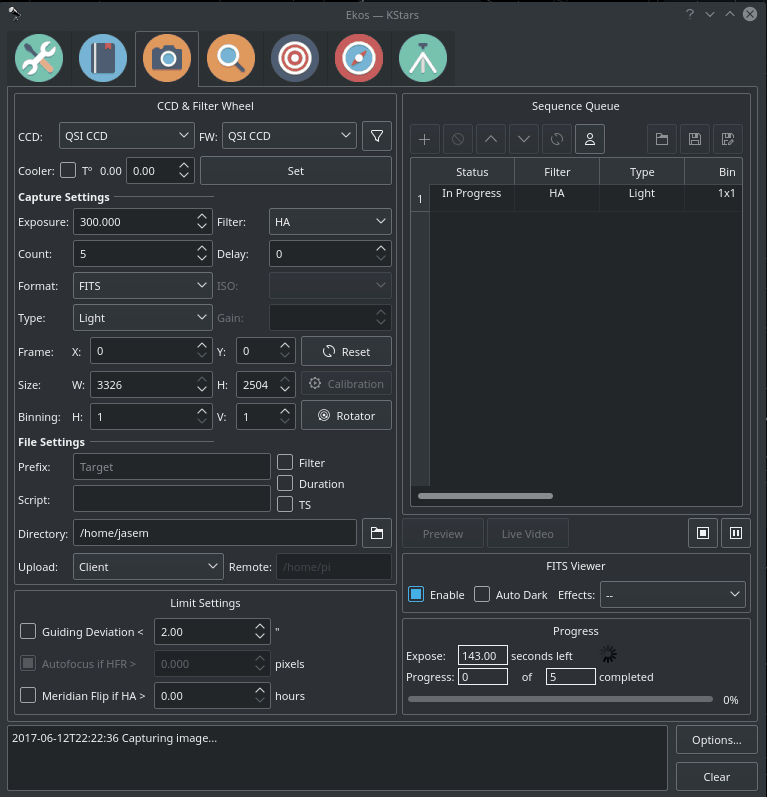
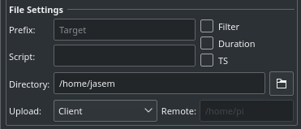
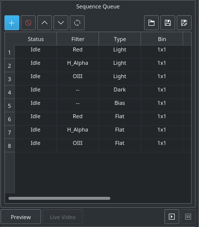
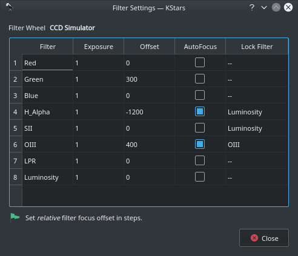

Capture

The CCD Module is your primary image and video acquisition module in Ekos. It enables you to capture single (Preview), multiple images (Sequence Queue), or record SER videos along with a selection of filter wheel and rotator, if available.
CCD & Filter Wheel Group
Select the desired CCD/DSLR and Filter Wheel (if available) for capture. Set CCD temperature and filter settings.
- Camera: Select the active CCD camera. If your camera has a guide head, you can select it from here as well.
- Restart Camera Driver: Restarts the INDI driver for the active camera.
- Clear Camera Configuration: Resets the INDI driver camera configuration back to default.
- FW: Select the active Filter Wheel device. If your camera has a built-in filter wheel, the device would be the same as the camera.
- Filter Settings: Use the Filter Manager to specify various settings for each filter including exposure, offset, autofocus, and locking policy.
- Cooler: Toggle Cooler On/Off. Set the desired temperature, if your camera is equipped with a cooler. Check the option to force temperature setting before any capture. Capture process is only started after the measured temperature is within requested temperature tolerance. The default tolerance is 0.1 degrees Celsius but can be adjusted in Capture options under Ekos configuration.
|
IMPORTANT |
Only use driver restart if the camera driver becomes completely unresponsive. This feature is still experimental and might lead to instability so only use as a last resort. |
Capture Settings

Set all capture parameters as detailed below. Once set, you can capture a preview by click on Preview or add a job to the sequence queue.
- Exposure: Specify exposure duration in seconds.
- Filter: Specify the desired filter.
- Count: Number of images to capture
- Delay: Delay in seconds between image captures.
- Format: Specify capture save format. For all CCDs, only FITS option is available. For DSLR cameras, you can an additional option to save in Native format (example: RAW or JPEG).
- ISO: For DSLR cameras, specify the ISO value.
- Type: Specify the type of desired CCD frame. Options are Light, Dark, Bias, and Flat frames.
- Gain: Specify the value of gain between 0% to 100%. This will increase the signal to noise level of your image.
- Offset: Specify the value added to avoid the reads to clip at value "zero"
- Custom Properties: Set extended properties available in the camera to the job settings.
- Calibration: For Dark &s; Flat frames, you can set additional options explained in the Calibration Frames section below.
- Frame: Specify the left (X), top (Y), width (W), and height (H) of the desired CCD frame. If you changed the frame dimensions, you can reset it to default values by clicking on the reset button.
- Binning: Specify horizontal (X) and vertical (Y) binning.
Custom Properties
Many cameras offer additional properties that cannot be directly set in the capture settings using the common control. The capture controls described above represent the most common settings shared among different cameras, but each camera is unique and may offer its own extended properties. While you can use INDI Control Panel to set any property in the driver; it is important to be able to set such property for each job in the sequence. When you click Custom Properties, a dialog is shown divided into Available Properties and Job Properties. When you move an Available Properties to the Job Property list, its current value can be recorded once you click Apply. When you add a job to the Sequence Queue, the properties values selected in the Job Properties list shall be recorded and saved.
The following video explains this concept is more detail with a live example:
https://www.stellarmate.com/images/fss/videos/custom_properties.mp4
File Settings

Settings for specifying where captured images are saved to, and how to generate unique file names in addition to upload mode settings.
- Prefix: Specify the prefix to append to the generated filename. You may also append the frame type, filter, expose duration, and ISO 8601 timestamp. For example, if you specify Prefix as M45 and checked the Type and Filter checkboxes, and assuming your filter was set to Red and your frame type is Light, the generated file names will be as follows:
- M45_Light_Red_001.fits
- M45_Light_Red_002.fits
If TS was checked, a timestamp will be appended to the filename, example:
- M45_Light_Red_001_2016-11-09T23-47-46.fits
- M45_Light_Red_002_2016-11-09T23-48-34.fits
- Script: Specify an optional script to be executed after each capture is complete. The full path of the script must be specified and it must executable. To denote success, the script must return zero as this would allow the sequence to continue. If a non-zero value is returned by the script, the sequence is aborted.
- Directory: Local directory to save the sequence images to.
- Save: Select how captured images are uploaded:
- Locally: Captured images are saved locally on disk in the directory specified in the Directory field.
- Remotely: When connecting to a remote device, select this option to save images on the remote device only. No images are uploaded to Ekos.
- Both: Captured images are saved on both the remote computer and on the local disk as well. When selecting Remotely or Both, you must specify the remote directory where the remote images are saved to. By default, all captured images are uploaded to Ekos.
When selecting Remotely or Both, you must specify the remote directory where the remote images are saved to. By default, all captured images are uploaded to Ekos.
- Remote: When selecting either Remotely or Both modes above, you must specify the remote directory where remote images are saved to.
Limit Settings

Limit settings are applicable to all the images in the sequence queue. When a limit is exceeded, Ekos shall command the appropriate action to remedy the situation as explained below.
- Guiding Deviation: If checked, it enforces a limit of maximum allowable guiding deviation for the exposure, if autoguiding is used. If the guiding deviation exceeds this limit in arcseconds, it aborts the exposure sequence. It will automatically resume the exposure sequence again once the guiding deviation goes below this limit.
- Autofocus if HFR exceeds a value: If autofocus is enabled in the focus module and at least one autofocus operation was completed successfully, you can set the maximum acceptable HFR value. If this option is enabled then between consecutive exposures, the HFR value is recalculated, and if found to exceed the maximum acceptable HFR value, then an autofocus operation is automatically triggered. If the autofocus operation is completed successfully, the sequence queue resumes, otherwise, the job is aborted.
- Autofocus if change in temperature exceeds a value: If autofocus is enabled in the focus module and at least one autofocus operation was completed successfully, you can set the maximum acceptable change in temperature value. If this option is enabled then between consecutive exposures, the change in temperature value is recalculated, and if found to exceed the maximum acceptable change in temperature value, then an autofocus operation is automatically triggered. If the autofocus operation is completed successfully, the sequence queue resumes, otherwise the job is aborted.
- Meridian Flip: If supported by the mount, set the hour angle limit (in hours) before a meridian flip is commanded. For example, if you set the meridian flip duration to 0.1 hours, Ekos shall wait until the mount passes the meridian by 0.1 hours (6 minutes), then it commands the mount to perform a meridian flip. After the meridian flip is complete, Ekos re-aligns using astrometry.net (if the alignment was used) and resumes guiding (if it was started before) and then resumes the capture process automatically.
Sequence Queue
Sequence Queue is the primary hub of the Ekos Capture Module. This is where you can plan and execute jobs using the sequence queue built-in powerful editor. To add a job, simply select all the parameters from the capture and file settings as indicated above. Once you selected your desired parameters, click on the add button  in the sequence queue to add it to the queue.
in the sequence queue to add it to the queue.

You can add as many jobs as desired. While it is not strictly necessary, it is preferable to add the dark and flat jobs after the light frames. Once you are done adding jobs, simply click Start Sequence  to begin executing the jobs. A job state changes from Idle to In Progress and finally to Complete once it is done. The Sequence Queue automatically starts the next job. If a job is aborted, it may be resumed again. To pause a sequence, click the pause button and the sequence will be stopped after the current capture is complete. To reset the status of all the jobs, simply click the reset button . Please beware that all image progress counts are reset as well. To preview an image in KStars FITS Viewer, click the Preview button.
to begin executing the jobs. A job state changes from Idle to In Progress and finally to Complete once it is done. The Sequence Queue automatically starts the next job. If a job is aborted, it may be resumed again. To pause a sequence, click the pause button and the sequence will be stopped after the current capture is complete. To reset the status of all the jobs, simply click the reset button . Please beware that all image progress counts are reset as well. To preview an image in KStars FITS Viewer, click the Preview button.
Sequence queues can be saved as an XML file with extension .esq (Ekos Sequence Queue). To load a sequence queue, click the open document button . Please note that it will replace any current sequence queues in Ekos.
|
IMPORTANT |
Job Progress: Ekos is designed to execute and resume the sequence over multiple nights if required. Therefore, if Remember Job Progress option is enabled in Ekos Options, Ekos shall scan the file system to count how many images are already completed and will resume the sequence from where it was left off. If this default behavior is not desired, simply turn off Remember Job Progress under options. |
To edit a job, double click it. You will notice the add button now changed to check mark button  . Make your changes on the left-hand side of the CCD module and once done, click on the check mark button. To cancel a job edit, click anywhere on the empty space within the sequence queue table.
. Make your changes on the left-hand side of the CCD module and once done, click on the check mark button. To cancel a job edit, click anywhere on the empty space within the sequence queue table.
To capture a preview image with the settings you have set in the Camera & Filter Wheel Panel, click the Capture a Preview button. If your camera doesn't support live video feed, click on the Start framing (looping) button. If your camera supports live video feed, then you can click the Live Video camera photo button to start streaming. The video stream window enables recording and subframing of the video stream. For more information, check the video below:
https://www.youtube.com/watch?v=qRsAqTL4ZZI
Live Video
The Live Video window allows live streaming of your camera in order to check if your camera is working fine. You can also record a video, change FPS and zoom in.
|
IMPORTANT |
Please note that while recording, the streaming frame rate will drop to increase the efficiency of the video recording process. |
|
IMPORTANT |
If Ekos is connected to remote device (eg. StellarMate), please specify the remote directory (eg. /home/stellarmate/Pictures) instead of a local directory. Specifying a local directory could result in errors (as that directory might not exist in the remote device). |
- Start Recording: Starts recording everything in the live video frame. Governed by the record options (Until stopped, duration, or frames).
- Stop Recording: Stops recording and saves a video file.
- Recording Options: Opens the recording options dialog where you can set the following options:
- File name: Set SER video file name. Record files may contain some patterns to make them dynamic:
- _D_ for the date in YYYY-MM-DD.
- _H_ for time in HH:MM:SS.
- _T_ for ISO8601 time stamp.
- _F_ for filter name, if any.
- Directory: Set SER video remote directory name. If INDI server is running locally, then a local directory can be selected. However, if you are capture live video recording optionsconnected to a remote INDI server, then the directory must be a valid directory on the remote file system where it is saved. Record directories may contain some patterns to make them dynamic:
- _D_ for the date in YYYY-MM-DD.
- _H_ for time in HH:MM:SS.
- _T_ for ISO8601 time stamp.
- _F_ for filter name, if any.
- Record:
- Until Stopped: Record stream until manually stopped.
- Duration: Record stream for specified duration in seconds.
- Frames: Record stream until this many frames are captured.
- Zooming in: You can zoom in to different parts of your live video frame by clicking and holding, then dragging to another position to create a blue selection, when you release the mouse, the frame will be zoomed in to the selected area.
- Reset frame: Unzooms and resets the frame back to default.
- Toggle debayer: Turns on or off Debayering, which is a demosaicing algorithm, it is a digital image process used to reconstruct a full color image from the incomplete color samples output from an image sensor overlaid with a color filter array. It is also known as CFA interpolation or color reconstruction.
- Frame (s): Specifies the amount of frames per second for the video stream. Click on Apply FPS and restart stream when you set a new value for this field.
- Apply FPS and restart stream: Applies the FPS set in the Frame (s) field and restarts the stream with the new FPS setting.
- FPS: Displays the average FPS of the live video being streamed.
Filter Settings

Click the filter icon  next to the filter wheel selection box to open the filter settings dialog. If you are using filters that are not parafocal with each other and require a specific amount of focus offsets in order to get them into proper then set all the relative focus offsets in the dialog.
next to the filter wheel selection box to open the filter settings dialog. If you are using filters that are not parafocal with each other and require a specific amount of focus offsets in order to get them into proper then set all the relative focus offsets in the dialog.
Configure settings for each filter individually:
- Filter: Filter Name
- Exposure: Set exposure time used when performing focus under this filter. By default, it is set to 1 second.
- Offset: Set relative offsets. Ekos will command a focus offset change if there is a difference between the current and target filter offsets. For example, given the values in the example image, if the current filter is set to Red and next filter is Green, then Ekos shall command the focuser to Focus In by +300 ticks. Relative positive focus offsets denote Focus Out while negative values denote Focus In.
- Auto Focus: Check this option to initial AutoFocus process whenever the filter is changed to this filter.
- Lock Filter: Set which filter should be set and locked when performing autofocus for this filter.
- Flat Focus Position: this value is set automatically once you finish autofocus for some filter. If the sequence queue contains flat images, then Ekos would first move the focuser to the filter absolute focus position before capturing the flat images. This to ensure both your light and flat frames are exactly captured using the same per-filter offset.
Let's take an example. Suppose the capture sequence is running and the current filter is Green, so the relative offset is already set to +300. The next image in the sequence uses Hydrogen Alpha (H_Alpha) so before Ekos captures the next frame, the following actions take place:
- Since Luminosity is specified as the locked filter and auto-focus is checked, the filter is changed to Luminosity
- A focus offset is -300 is applied since the prior filter Green was moved +300 previously.
- Auto Focus process is initiated.
- Once Auto Focus is complete, the filter is changed to H_Alpha.
- A focus offset of -1200 is applied.
- Capture sequence is resumed.
FITS Viewer
Captured images are displayed in KStars FITS Viewer tool, and also in the summary screen. Set options related to how the images are displayed in the viewer.
- Auto Dark: You can capture an image and auto dark subtract it by checking this option. Note that this option is only applicable when using Preview, you cannot use it in batch mode sequence queue.
- Effects: Image enhancement filter to be applied to the image after capture.
Rotator Settings

Field Rotators are supported in INDI & Ekos. The rotator angle is the raw angle reported by the rotator and is not necessary the Position Angle. A Position Angle of zero indicates that the frame top (indicated by small arrow) is pointing directly at the pole. The position angle is expressed as E of N (East of North), so 90 degrees PA indicates the frame top points 90 degrees away (counter-clockwise) from the pole. Check examples for various PAs.
To calibrate the Position Angle (PA), capture and solve an image in the Ekos Align module. An offset and a multiplier are applied to the raw angle to produce the position angle. The Ekos Rotator dialog permits direct control of the raw angle and also the PA. The offset and multiplier can be changed manually to synchronize the rotator's raw angle with the actual PA. Check Sync FOV to PA to rotate the current Field of View (FOV) indicator on the Sky Map with the PA value as you change it in the dialog.
https://www.youtube.com/watch?v=V_hRPMlPjmA
Each capture job may be assigned different rotator angles, but be aware that this would cause guiding to abort as it would lose track of the guide star when rotating. Therefore, for most sequences, the rotator angle is kept the same for all capture jobs.
Calibration Frames

For Flat Field frames, you can set calibration options in order to automate the process. The calibration options are designed to facilitate automatic unattended flat field frame capture. It can also be used for dark and bias frames if desired. If your camera is equipped with a mechanical shutter, then it is not necessary to set calibration settings unless you want to close the dust cover to ensure no light at all passes through the optical tube. For flat fields, you must specify the flat field light source, and then specify the duration of the flat field frame. The duration can be either manual or based on ADU calculations.
- Flat Field Source
- Manual: The flat light source is manual.
- Dust Cover with Built-In Flat Light: If using a dust cover with builtin light source (e.g. FlipFlat). For dark and bias frames, close the dust cap before proceeding. For flat frames, close the dust cap and turn on the light source.
- Dust Cover with External Flat Light: If using a dust cover with an external flat light source. For dark and bias frames, close the dust cap before proceeding. For flat frames, open the dust cap and turn on the light source. The external flat light source location is presumed to be the parking location.
- Wall: Light source is a panel on the observatory wall. Specify the Azimuth and Altitude coordinates of the panel and the mount shall slew there before capturing the flat field frames. If the light panel is controllable from INDI, Ekos shall turn it on/off as required.
- Dawn/Dusk: Currently unsupported.
- Flat Field Duration
- Manual: Duration is as specified in the Sequence Queue.
- ADU: Duration is variable until specified ADU is met.
Before the calibration capture process is started, you can request Ekos to park the mount and/or dome. Depending on your flat source selection above, Ekos will use the appropriate flat light source before starting flat frames capture. If ADU is specified, Ekos begins by capturing a couple of preview images to establish the curve required to achieve the desired ADU count. Once an appropriate value is calculated, another capture is taken and ADU is recounted until a satisfactory value is achieved.